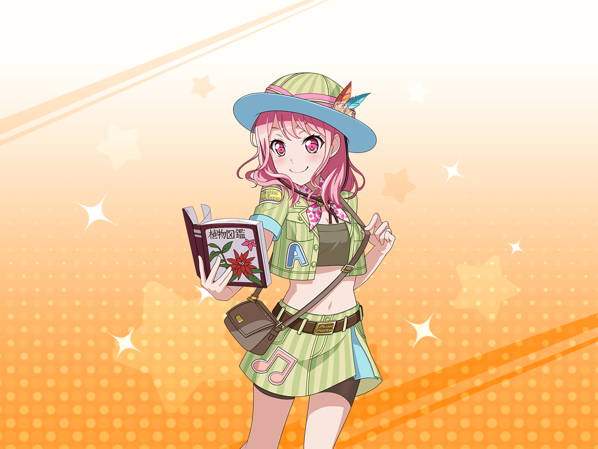

無人島 小屋の中
彩
イヴちゃん、麻弥ちゃん、日菜ちゃん、大丈夫かな……
千聖
大丈夫よ、そんなに不安がることないわ
彩
ミッション、クリアできるかな……
遭難してないといいけど……
千聖
遭難なんて、おおげさね。
スタッフさんだってついてるのよ？
彩
でも、もしかしたらクマとかに襲われたり……
千聖
彩ちゃん、わかったから、落ち着いて。
ずっとうろうろされると、
気になって、仕方ないわ
千聖
そもそも、テレビの収録なんだから、
危険なことがあるわけないでしょ？
彩
ま、まあ、そうだけど……
でも、万が一ってこともあるよね！
千聖
万が一にもないわよ。
ほら、とりあえずこっちに来て、一緒に座りましょう
彩
うー、千聖ちゃんは
いつでも余裕があってうらやましいな……
千聖
彩ちゃんが、慌てすぎなだけじゃないかしら
千聖
なんだか今日は
いつもより落ち着きがないけれど、どうかしたの？
彩
……私、今回の収録、
全然役に立ってないような気がして……
彩
やるぞ～って張り切っても、
なんでかみんなに止められちゃうし……
彩
はぁ……
みんな、私のこと頼りにしてくれてないのかなぁ……
千聖
そんなことないわ、彩ちゃん。
だいたい私だって、今回、まだ何もしていないし。
彩ちゃんと一緒よ
千聖
でも、今はこうやって三人を待つと決めたのだから、
私達は慌てずに、待ってあげなくっちゃ
彩
で、でも、ただ待ってるだけなんて……
やっぱり不安だよ……
千聖
気持ちはわかるけど、みんなを信じなくちゃ
千聖
三人が戻ってきた時に、不安そうな顔で待っているより、
笑顔で待っていた方がきっと喜ぶはずよ、でしょ？
彩
それは確かにそうかも……
千聖
そうやって仲間を信頼するのも、
アイドルとしても、バンドとしても大切なことだと思うわ
彩
……うん！ わかった！
千聖ちゃんの言う通りだよね！
ゴメンね、一人で焦っちゃって……
彩
それにしても、千聖ちゃんは
いつも冷静ですごいよね
彩
どうしたら私も、千聖ちゃんみたいに、
落ち着いていられるのかなぁ？
千聖
……そうね、
私達はみんな、それぞれ得意なことや、
苦手なことがあるでしょう？
千聖
だったら私の得意なところは私が、
彩ちゃんの得意なところは彩ちゃんに、
そうやってお互いに協力すればいいのよ
千聖
だって、今の私達は一人じゃなくて、
パスパレっていう、１つのグループなんだから
彩
１つのグループ……
千聖
今は私達の出番じゃないから、
ゆっくり待っていればいいの
千聖
後で、私達の出番が来たら、活躍する。
そう考えたら、気持ちが落ち着いてこない？
彩
うん、そっか……
一人で頑張ってるわけじゃないんだもんね……
千聖
ええ、だからあの三人が戻ってきて、
私達の出番が来た時は、思いっきり目立ちましょ？
彩
うん！
やっぱり千聖ちゃんはすごいね！
彩
……でも、そうだよね！
今は私達じゃなくて、みんなの活躍するところ！
彩
この後で私達の出番が来たら、
頑張っちゃうぞ～！
千聖
ようやく、いつもの彩ちゃんらしくなってきたわね
彩
ありがとう、千聖ちゃん。
心配してくれて
千聖
……別に、そういうわけじゃないわ。
ただ、隣で慌てられても困るだけだもの
彩
えへへ、それでもありがとう、千聖ちゃん！